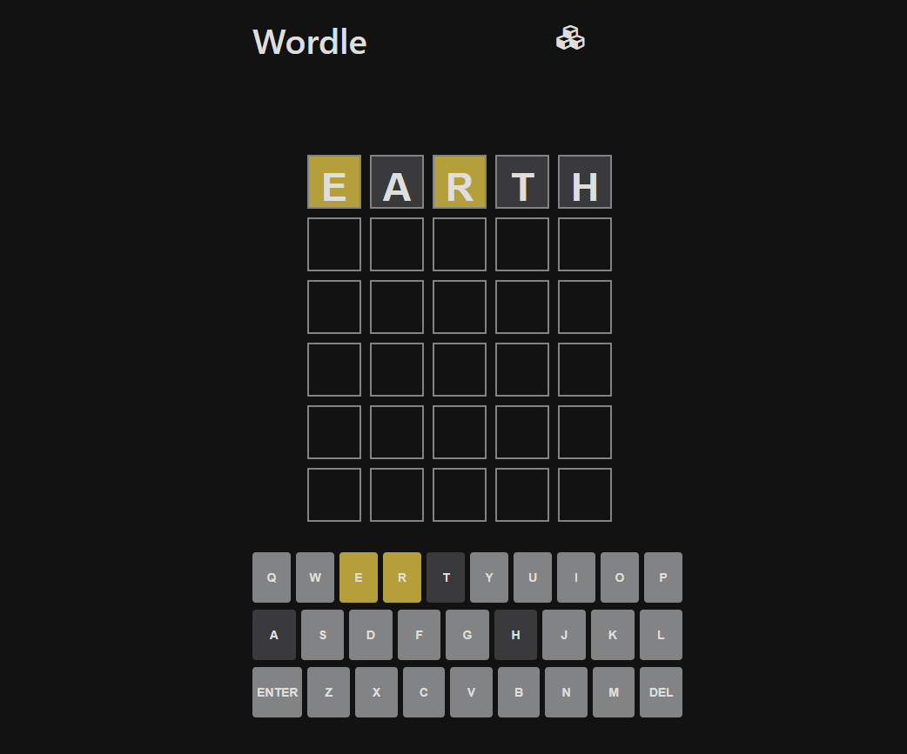

Stuart Stein
Consultant Software Developer at XPS Pensions
Software developer with an interesting in functional programming, game development and web technologies. Extensive experience on the front-end and back-end of web applications, with a focus on building scalable and maintainable systems. Experience in Azure. In my spare time I enjoy building games and experimenting with new technologies. Outside software development I love climbing, bouldering, hiking and running.
Tech Stack
Clojure / (Script)
Reframe / Reagent
Go
C# .NET
SQL
Javascript
Azure
TDD
Projects
Space Shooter
Go
ebitengine
A simple 2D space shooter game built with Go and the Ebiten game library. The game features basic shooting mechanics, enemy spawning, power-ups and collision detection. Runs in the browser via wasm

Snake
Go
ebitengine
A simple implementation of the classic Snake game using Go and the Ebiten game library. The game features basic snake movement, food spawning, and collision detection. Runs in the browser via wasm
TOY ASM
Clojurescript
Reframe
Reagent
Shadow-cljs
An implementation of a custom ASM language, with a source code parser, interpreter and a visualisation of that interpreter as it runs. Configurable run speed, with supports for breakpoints and steppoing through code.

Maze Solver
Clojurescript
Reframe
Reagent
Shadow-cljs
A project that allows you to create mazes in a grid, set a start and end position and have it generate the shortest path from start to end.
Point in a Polygon solver
Clojurescript
Reframe
Reagent
Shadow-cljs
A project that allows you to draw complex polygons, then select points and it determines if the point is inside or outside the polygon using winding numbers.
Brainfuck Interpreter
Clojurescript
Reframe
Reagent
Shadow-cljs
A brainfuck interpreter.
Peg Solitaire
Clojurescript
Reframe
Reagent
Shadow-cljs
Peg Solitaire. The aim is to remove all but one pegs by jumping pegs to remove them.